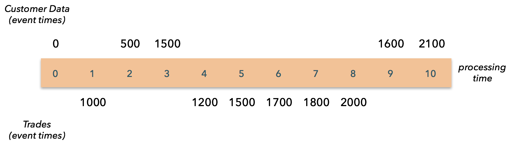

丰富的 Joins
介绍
本练习的目的是探索通过将客户信息作为客户更新流到达而丰富金融交易流的技术。 关于富集 join的思考方式有多种，本练习的目的是探讨有关此主题的一些变体。
我们已经为 Trade 流和 Customer 流实现了源。 这些来源是简单的模拟，仅提供有关一个客户以及该客户交易的事件。 这两个流可以在它们共有的 customerId 字段上连接。
定时
按事件时间进行组织时，这两个流的行为如下所示 - 我们首先在时间0了解 Customer ，然后在时间500再了解，等等-第一次 Trade 发生在时间1000，依此类推：

但是，在处理时间来看，这两个流恰好按顺序到达，但彼此竞争。 例如，第二条 Customer 记录在事件时间内早于第一个 Trade ，但在处理时间之后到达：

数据类型
Trade 记录包含：
timestamp : long // timestamp (milliseconds since the epoch) customerId : long // a unique id for each event tradeInfo : String // payload
Customer 记录包含：
timestamp : long // timestamp (milliseconds since the epoch) customerId : long // a unique id for each event customerInfo : String // payload
join 的结果将是一个 EnrichedTrade ：
trade : Trade customer : Customer
您将在此处找到定义的这些基本类型：
处理时间join
这是实施 join 的最简单方法，适用于欺诈检测之类的用例，在这些案例中，精确，确定的结果不是必须的，而保持较低的延迟非常有价值。 这里的总体思路是，利用可获得的任何客户信息立即 join 每笔交易。
您可以在 ProcessingTimeJoinExercise 类中找到这种连接的有效实现。